-
MIMIC
-
November 2021
-
inDesign, Inkjet Printer, Perfect Binding
-
OBJECTIVE
Conceptualize a book design from an object.
INSPIRATION
A fishing lure.
-
CONCEPT
“Mimic”
By evaluating the visual and functionality of a lure, I noticed that an object that mimics always has a model that it imitates. Based on the model, a new identity is born, most of the time for survival purposes.
Here, I display this point by collecting articles that talks about imitation done for improvement. Each article has its title that mimics the scale of an image caption next to it, while the caption also mimics the position of the title. As the lead-in of an article mimics the scale and color of an image next to it, the body paragraph also follows the scale and alignment of the lead-in. The spreads with just photographs and captions creates a stamped visual and the tight leading that overlaps letters demonstrates that when something mimics, it has a connection with another object.
 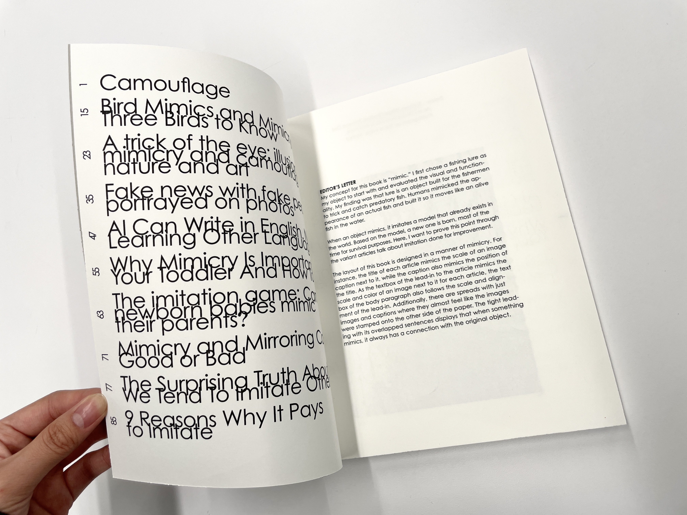
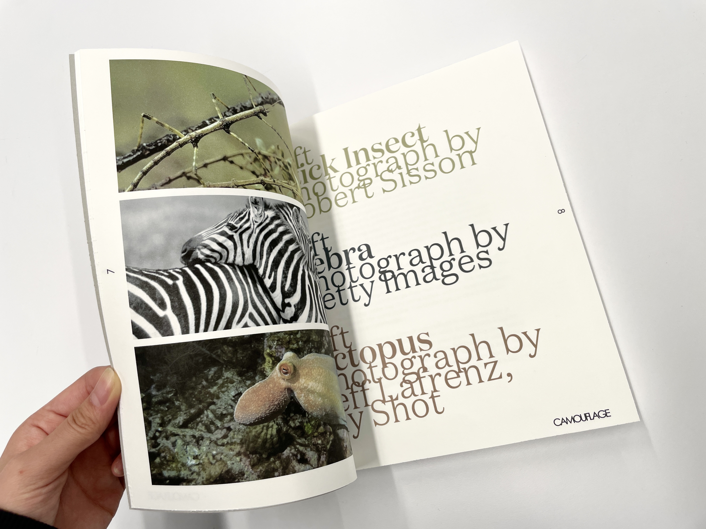
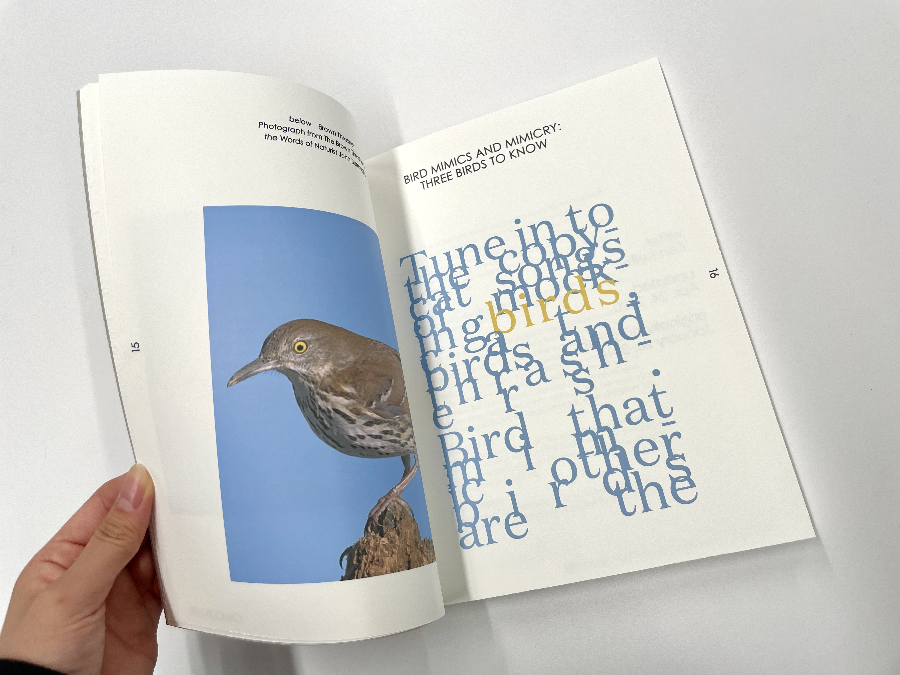
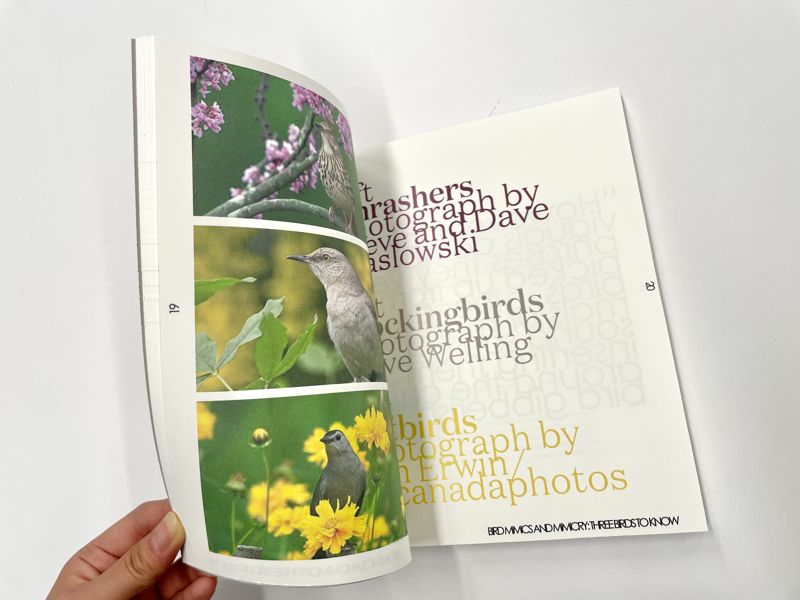
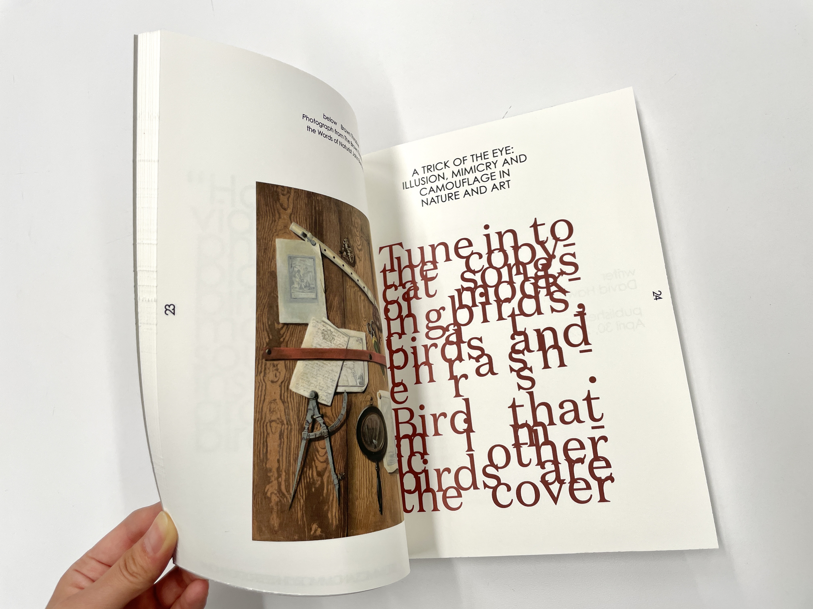
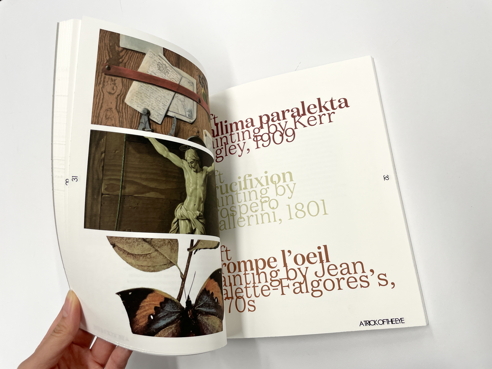
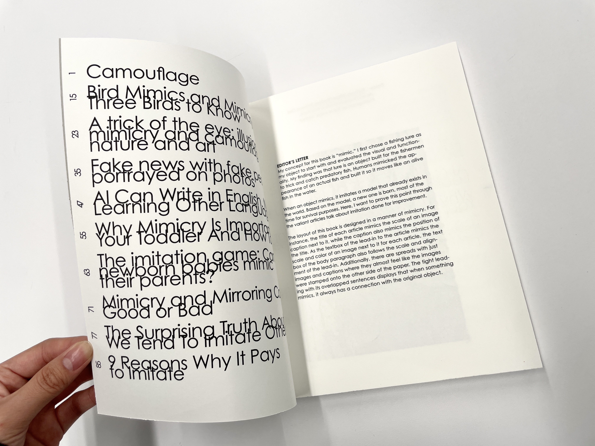
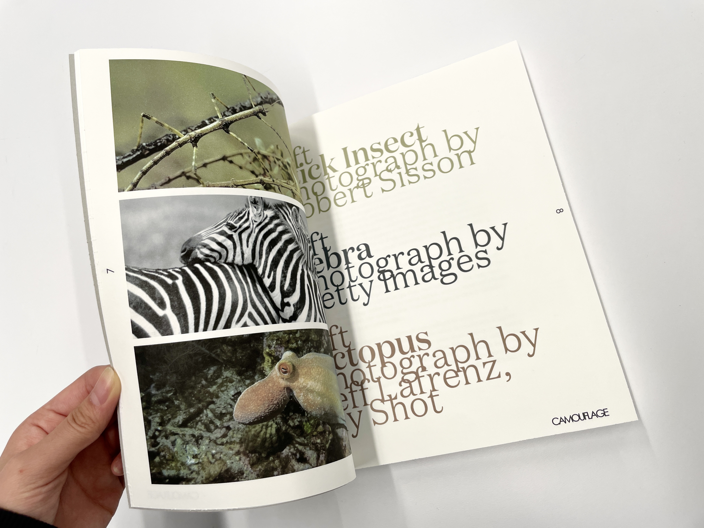
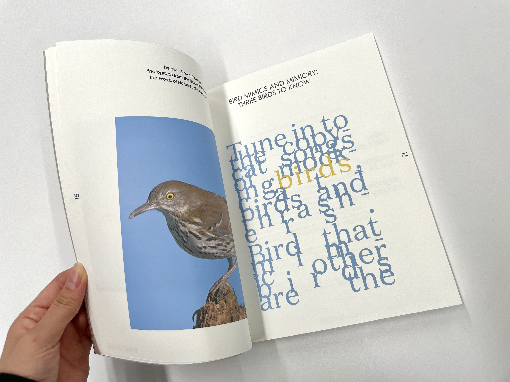
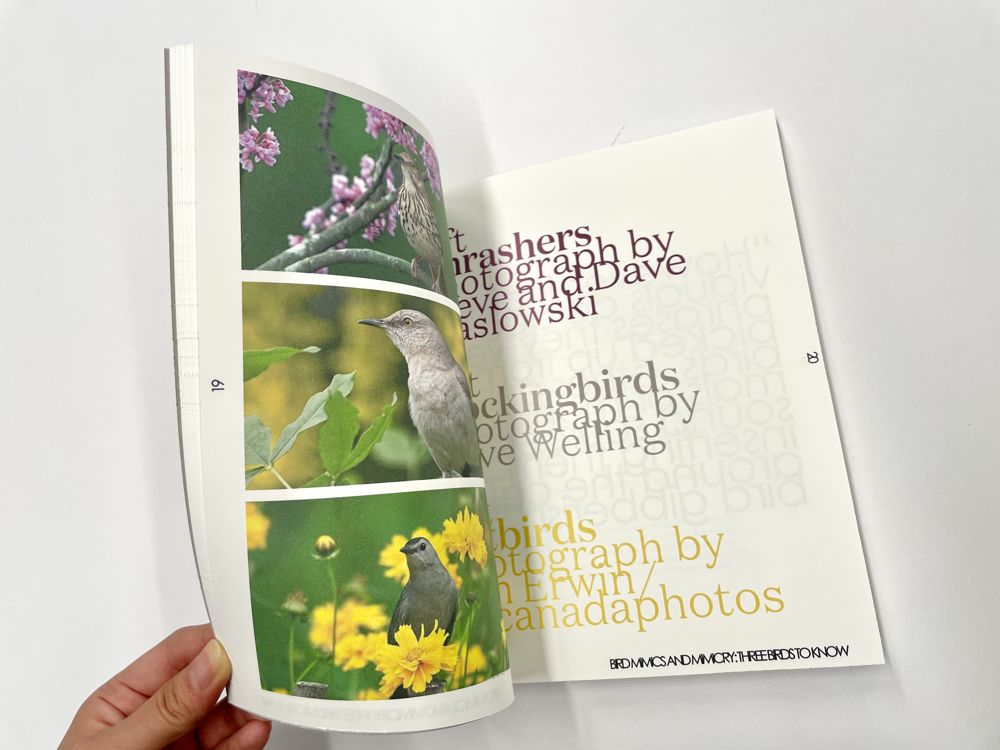
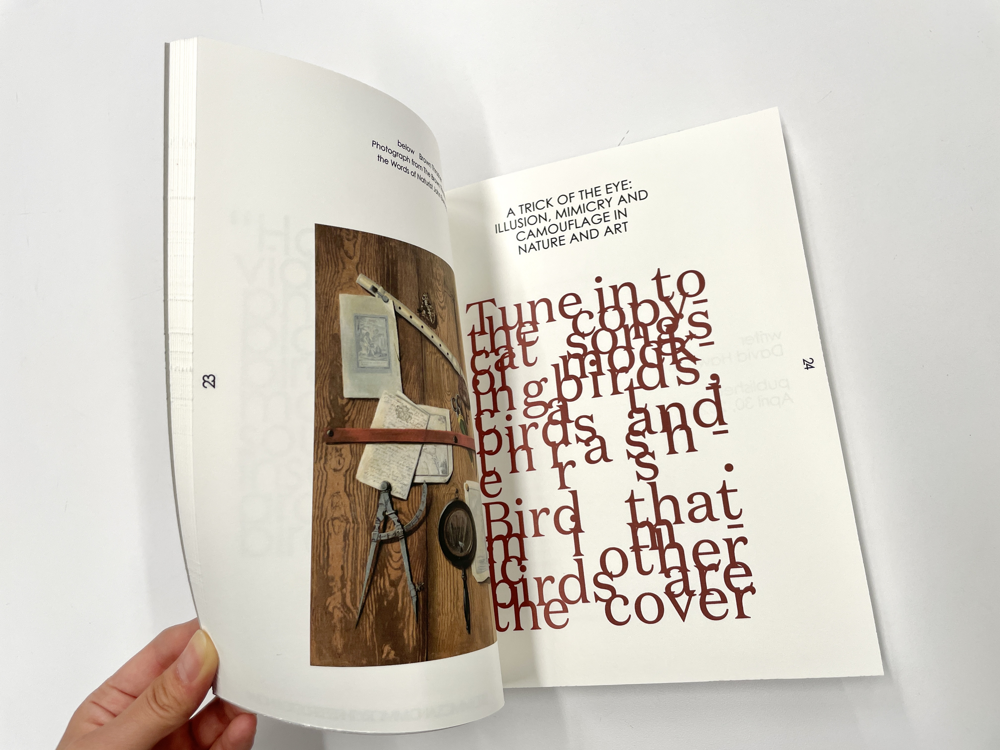
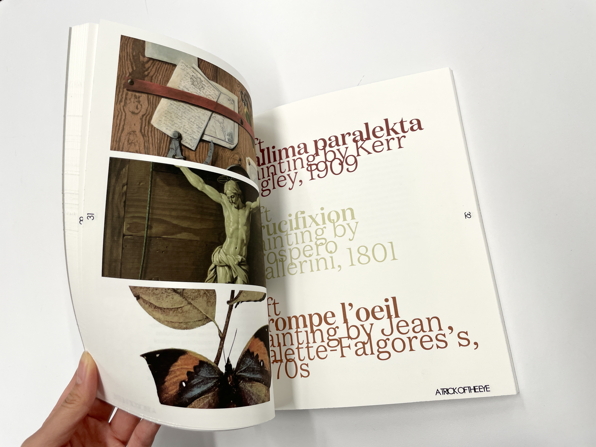
 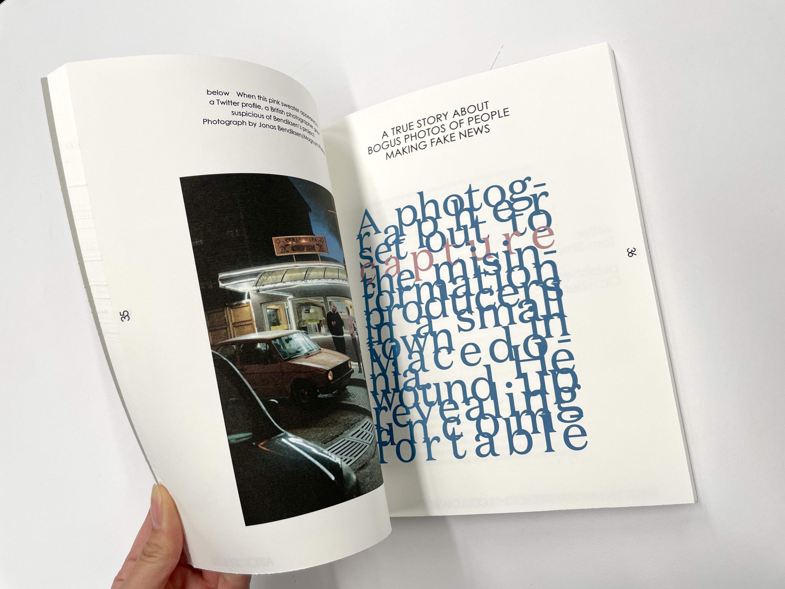
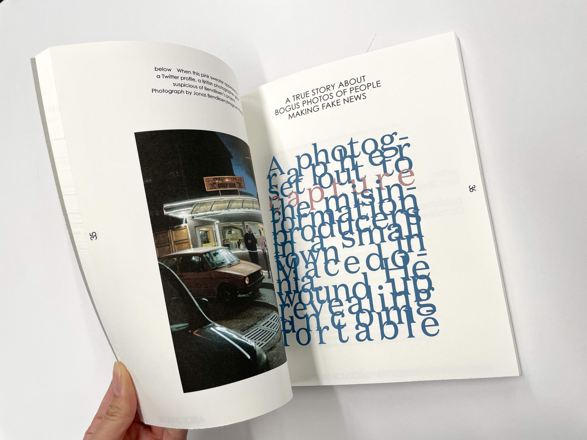

Aoi is...
A 3rd year student in BFA Communication Design Major at Parsons School of Design, The New School.
Based in New York City
An aspiring Graphic Designer :)
My favorite moment in life is when I find light forming abstracted shadow on an object.
My hobby is to take pictures of what I find appealing in daily life!
Skills
Resume
Thank you for your interest!
Contact Aoi